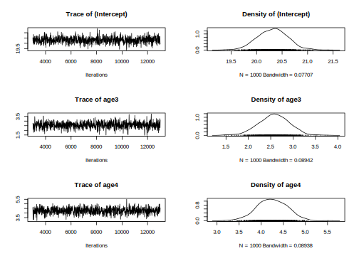

4.2 Asreml-R
4.2.1 Estimating repeatability
With repeated measures on individuals it is often of interest to see how repeatable a trait is. We can estimate the repeatability of a trait as the proportion of phenotypic variance \(V_P\) explained by individual variance \(V_{ind}\); \(R = V_{ind}/V_P = V_{ind}/(V_{ind}+V_R)\).
modelv <- asreml(
fixed = laydate ~ 1,
random = ~animal,
residual = ~ idv(units),
data = gryphonRM,
na.action = na.method(x = "omit", y = "omit")
)## Model fitted using the sigma parameterization.
## ASReml 4.1.0 Tue Nov 23 22:10:02 2021
## LogLik Sigma2 DF wall cpu
## 1 -10182.83 1.0 1606 22:10:02 0.0
## 2 -8266.10 1.0 1606 22:10:02 0.0
## 3 -6145.01 1.0 1606 22:10:02 0.0
## 4 -4651.57 1.0 1606 22:10:02 0.0
## 5 -3819.31 1.0 1606 22:10:02 0.0
## 6 -3554.22 1.0 1606 22:10:02 0.0
## 7 -3501.56 1.0 1606 22:10:02 0.0
## 8 -3497.58 1.0 1606 22:10:02 0.0
## 9 -3497.54 1.0 1606 22:10:02 0.0
## 10 -3497.54 1.0 1606 22:10:02 0.0plot(modelv)
The model assumption seems correct, so we can look at the different estimates.
Note that since we want to estimate the amount of variance explained by individual identity (rather than by additive genetic effects), we fit animal as a normal random effect and we don’t associate it with the pedigree.
Here, we also ask the model to remove any NA in laydate.
This model partitions the phenotypic variance in laydate as follows:
summary(modelv)$varcomp## component std.error z.ratio bound %ch
## animal 11.08634 1.1794319 9.399728 P 0
## units!units 21.29643 0.8896196 23.938798 P 0
## units!R 1.00000 NA NA F 0Between-individual (or among-individual) variance is given by the animal component, while the residual component (units!units) represents within-individual variance. Here then the repeatability of the trait can be determined by hand as 0.34 (i.e., as 11.086/(11.086 + 21.296)).
Mean lay date might change with age, so we could ask what the repeatability of lay date is after conditioning on age. This would be done by adding age into the model as a fixed effect.
modelw <- asreml(
fixed = laydate ~ age,
random = ~animal,
residual = ~ idv(units),
data = gryphonRM,
na.action = na.method(x = "omit", y = "omit")
)## Model fitted using the sigma parameterization.
## ASReml 4.1.0 Tue Nov 23 22:10:03 2021
## LogLik Sigma2 DF wall cpu
## 1 -8402.968 1.0 1602 22:10:03 0.0
## 2 -6912.361 1.0 1602 22:10:03 0.0
## 3 -5274.379 1.0 1602 22:10:03 0.0
## 4 -4143.634 1.0 1602 22:10:03 0.0
## 5 -3541.895 1.0 1602 22:10:03 0.0
## 6 -3372.909 1.0 1602 22:10:03 0.0
## 7 -3347.670 1.0 1602 22:10:03 0.0
## 8 -3346.655 1.0 1602 22:10:03 0.0
## 9 -3346.652 1.0 1602 22:10:03 0.0summary(modelw)$varcomp## component std.error z.ratio bound %ch
## animal 12.28982 1.156115 10.63027 P 0
## units!units 16.37989 0.686619 23.85586 P 0
## units!R 1.00000 NA NA F 0The repeatability of lay date, after accounting for age effects, is now estimated as 0.43 (i.e., as 12.29/(12.29 + 16.38)). So, just as we saw when estimating \(h^2\) in Tutorial 1, the inclusion of fixed effects will alter the estimated effect size if we determine total phenotypic variance as the sum of the variance components. Thus, proper interpretation is vital.
summary(modelw, coef = TRUE)$coef.fixed## solution std error z.ratio
## age_2 0.000000 NA NA
## age_3 2.577777 0.3355253 7.682811
## age_4 4.247276 0.3309028 12.835418
## age_5 6.094490 0.3375537 18.054872
## age_6 3.132675 0.3371074 9.292811
## (Intercept) 20.305073 0.2899515 70.029214wald.asreml(modelw, ssType = "conditional", denDF = "numeric")## Model fitted using the sigma parameterization.
## ASReml 4.1.0 Tue Nov 23 22:10:03 2021
## LogLik Sigma2 DF wall cpu
## 1 -3346.652 1.0 1602 22:10:03 0.0
## 2 -3346.652 1.0 1602 22:10:03 0.0
## 3 -3346.652 1.0 1602 22:10:03 0.0## $Wald
## [0;34m
## Wald tests for fixed effects.[0m
## [0;34mResponse: laydate[0m
##
## Df denDF F.inc F.con Margin Pr
## (Intercept) 1 460.2 14880.0 14880.0 0.00000e+00
## age 4 1225.3 88.7 88.7 A 2.89474e-66
##
## $stratumVariances
## df Variance animal units!units
## animal 463.8399 56.46460 3.26162 1
## units!units 1138.1601 16.37989 0.00000 1Here age is modeled as a 5-level factor (specified using the function as.factor() at the beginning of the analysis). We could equally have fitted it as a continuous variable, in which case, given potential for a late life decline, we would probably also include a quadratic term.
In addition, using age as continuous variable can help in saving some degree of freedom in the analysis.
4.2.2 Partitioning additive and permanent environment effects
Generally we expect that the repeatability will set the upper limit for heritability since among individual variation can be decomposed in the additive genetic variation and non additive genetic variation. In other word, the additive genetic variation is a subcomponent of the difference between individuals. Non-additive contributions to fixed among-individual differences are normally referred to as permanent environment effects. If a trait has repeated measures then it is necessary to model permanent environment effects in an animal model to prevent upward bias in \(V_A\).
To illustrate it, we first fit the animal model:
ainv <- ainverse(gryphonped)
modelx <- asreml(
fixed = laydate ~ age,
random = ~ vm(animal, ainv),
residual = ~ idv(units),
data = gryphonRM,
na.action = na.method(x = "omit", y = "omit")
)## Model fitted using the sigma parameterization.
## ASReml 4.1.0 Tue Nov 23 22:10:04 2021
## LogLik Sigma2 DF wall cpu
## 1 -8751.390 1.0 1602 22:10:04 0.0
## 2 -7169.205 1.0 1602 22:10:04 0.0
## 3 -5427.604 1.0 1602 22:10:04 0.0
## 4 -4219.598 1.0 1602 22:10:04 0.0
## 5 -3569.815 1.0 1602 22:10:04 0.0
## 6 -3382.341 1.0 1602 22:10:04 0.0
## 7 -3352.867 1.0 1602 22:10:04 0.0
## 8 -3351.565 1.0 1602 22:10:04 0.0
## 9 -3351.560 1.0 1602 22:10:04 0.0Variance components are almost unchanged if we compare the previous model:
summary(modelx)$varcomp## component std.error z.ratio bound %ch
## vm(animal, ainv) 13.91784 1.443968 9.638607 P 0
## units!units 16.84008 0.707365 23.806768 P 0
## units!R 1.00000 NA NA F 0summary(modelw)$varcomp## component std.error z.ratio bound %ch
## animal 12.28982 1.156115 10.63027 P 0
## units!units 16.37989 0.686619 23.85586 P 0
## units!R 1.00000 NA NA F 0This suggests that most of the among-individual variance is – rightly or wrongly – being partitioned as \(V_A\) here. To instead to obtain an unbiased estimate of \(V_A\), we need to partition for both additive genetic and non-genetic sources of individual variation. We do it by fitting animal twice, once with a pedigree, and once without a pedigree (using ide()).
Here, the command ide allow to create a second effect using a similar variable.
modely <- asreml(
fixed = laydate ~ age,
random = ~ vm(animal, ainv) + ide(animal),
residual = ~ idv(units),
data = gryphonRM,
na.action = na.method(x = "omit", y = "omit")
)## Model fitted using the sigma parameterization.
## ASReml 4.1.0 Tue Nov 23 22:10:04 2021
## LogLik Sigma2 DF wall cpu
## 1 -7731.394 1.0 1602 22:10:04 0.0
## 2 -6426.548 1.0 1602 22:10:04 0.0
## 3 -4997.252 1.0 1602 22:10:04 0.0
## 4 -4018.486 1.0 1602 22:10:04 0.0
## 5 -3504.988 1.0 1602 22:10:04 0.0
## 6 -3363.160 1.0 1602 22:10:04 0.0
## 7 -3341.611 1.0 1602 22:10:04 0.0
## 8 -3340.682 1.0 1602 22:10:04 0.0
## 9 -3340.679 1.0 1602 22:10:04 0.0summary(modely)$varcomp## component std.error z.ratio bound %ch
## vm(animal, ainv) 4.876101 1.8087709 2.695809 P 0
## ide(animal) 7.400983 1.7280113 4.282948 P 0
## units!units 16.380188 0.6866189 23.856300 P 0
## units!R 1.000000 NA NA F 0The estimate of \(V_A\) is now much lower since the additive and permanent environment effects are being properly separated. We can estimate \(h^2\) and the repeatability from this model:
vpredict(modely, h2 ~ V1 / (V1 + V2 + V3))## Estimate SE
## h2 0.1701523 0.06073974vpredict(modely, repeatability ~ (V1 + V2) / (V1 + V2 + V3))## Estimate SE
## repeatability 0.4284108 0.027416024.2.3 Adding additional effects and testing significance
Models of repeated measures can be extended to include other fixed or random effects. For example try including year of measurement (year) and birth year (byear) as random effects.
modelz <- asreml(
fixed = laydate ~ age,
random = ~ vm(animal, ainv) + ide(animal) +
year + byear,
residual = ~ idv(units),
data = gryphonRM,
na.action = na.method(x = "omit", y = "omit")
)## Model fitted using the sigma parameterization.
## ASReml 4.1.0 Tue Nov 23 22:10:04 2021
## LogLik Sigma2 DF wall cpu
## 1 -4650.748 1.0 1602 22:10:04 0.0
## 2 -4088.264 1.0 1602 22:10:04 0.0
## 3 -3494.147 1.0 1602 22:10:04 0.0
## 4 -3127.161 1.0 1602 22:10:04 0.0 (1 restrained)
## 5 -2976.449 1.0 1602 22:10:04 0.0 (1 restrained)
## 6 -2955.785 1.0 1602 22:10:04 0.0 (1 restrained)
## 7 -2955.097 1.0 1602 22:10:04 0.0 (1 restrained)
## 8 -2955.095 1.0 1602 22:10:04 0.0 (1 restrained)
## 9 -2955.095 1.0 1602 22:10:04 0.0summary(modelz)$varcomp## component std.error z.ratio bound %ch
## byear 1.650876e-07 NA NA B 0
## year 7.938576e+00 1.9344619 4.103765 P 0
## vm(animal, ainv) 4.815136e+00 1.6682351 2.886365 P 0
## ide(animal) 8.433325e+00 1.5495778 5.442337 P 0
## units!units 7.795560e+00 0.3324411 23.449443 P 0
## units!R 1.000000e+00 NA NA F 0This model will return additional variance components corresponding to variation in lay dates between years of measurement and between birth cohorts of females. \(V_{byear}\) is very low and B appeared which tell us that the model had fixed the variance as a boundary. If you compare this model to a reduced model with byear excluded the log-likelihood remains unchanged.
modelz_2 <- asreml(
fixed = laydate ~ age,
random = ~ vm(animal, ainv) + ide(animal) +
year,
residual = ~ idv(units),
data = gryphonRM,
na.action = na.method(x = "omit", y = "omit")
)## Model fitted using the sigma parameterization.
## ASReml 4.1.0 Tue Nov 23 22:10:04 2021
## LogLik Sigma2 DF wall cpu
## 1 -4665.606 1.0 1602 22:10:04 0.0
## 2 -4097.928 1.0 1602 22:10:04 0.0
## 3 -3498.611 1.0 1602 22:10:04 0.0
## 4 -3128.789 1.0 1602 22:10:04 0.0
## 5 -2976.883 1.0 1602 22:10:04 0.0
## 6 -2955.806 1.0 1602 22:10:04 0.0
## 7 -2955.096 1.0 1602 22:10:05 0.0
## 8 -2955.095 1.0 1602 22:10:05 0.0summary(modelz_2)$varcomp## component std.error z.ratio bound %ch
## year 7.938576 1.9344829 4.103720 P 0
## vm(animal, ainv) 4.815137 1.6682366 2.886364 P 0
## ide(animal) 8.433324 1.5495828 5.442319 P 0
## units!units 7.795560 0.3324384 23.449637 P 0
## units!R 1.000000 NA NA F 0modelz$loglik## [1] -2955.095modelz_2$loglik## [1] -2955.0951 - pchisq(2 * (modelz_2$loglik - modelz$loglik), 1)## [1] 0.9990425year effects could alternatively be included as fixed effects (try it!). This will reduce \(V_R\) and increase the estimates of heritability and repeatability, which must now be interpreted as proportions of phenotypic variance after conditioning on both age and year of measurement effects.
modelz_3 <- asreml(
fixed = laydate ~ age+byear,
random = ~ vm(animal, ainv) + ide(animal) +
year,
residual = ~ idv(units),
data = gryphonRM,
na.action = na.method(x = "omit", y = "omit")
)## Model fitted using the sigma parameterization.
## ASReml 4.1.0 Tue Nov 23 22:10:05 2021
## LogLik Sigma2 DF wall cpu
## 1 -4623.985 1.0 1569 22:10:05 0.0
## 2 -4063.535 1.0 1569 22:10:05 0.0
## 3 -3471.618 1.0 1569 22:10:05 0.0
## 4 -3105.972 1.0 1569 22:10:05 0.0
## 5 -2955.436 1.0 1569 22:10:05 0.0
## 6 -2934.435 1.0 1569 22:10:05 0.0
## 7 -2933.721 1.0 1569 22:10:05 0.0
## 8 -2933.720 1.0 1569 22:10:05 0.0summary(modelz_3)$varcomp## component std.error z.ratio bound %ch
## year 8.029139 1.9920127 4.030666 P 0
## vm(animal, ainv) 5.060775 1.7855255 2.834334 P 0
## ide(animal) 8.412539 1.6494894 5.100087 P 0
## units!units 7.805139 0.3331474 23.428484 P 0
## units!R 1.000000 NA NA F 0wald.asreml(modelz_3, ssType = "conditional", denDF = "numeric")## Model fitted using the sigma parameterization.## Warning in asreml(fixed = laydate ~ age + byear, random = ~vm(animal, ainv) + :
## Algebraic derivatives for denominator df not available.## ASReml 4.1.0 Tue Nov 23 22:10:05 2021
## LogLik Sigma2 DF wall cpu
## 1 -2933.720 1.0 1569 22:10:05 0.0
## 2 -2933.720 1.0 1569 22:10:05 0.0
## Calculating denominator DF## $Wald
## [0;34m
## Wald tests for fixed effects.[0m
## [0;34mResponse: laydate[0m
##
## Df denDF F.inc F.con Margin Pr
## (Intercept) 1 55.3 1894.00 1894.00 0.00000
## age 4 845.2 152.70 132.90 A 0.00000
## byear 33 466.5 0.77 0.77 A 0.81646
##
## $stratumVariances
## df Variance year vm(animal, ainv) ide(animal)
## year 35.92378 144.92624 17.16741 -0.02687884 -0.06922989
## vm(animal, ainv) 348.27527 50.82831 0.00000 3.50972263 3.00281025
## ide(animal) 87.03390 34.64049 0.00000 0.00000000 3.18992331
## units!units 1097.76705 7.80514 0.00000 0.00000000 0.00000000
## units!units
## year 1
## vm(animal, ainv) 1
## ide(animal) 1
## units!units 1